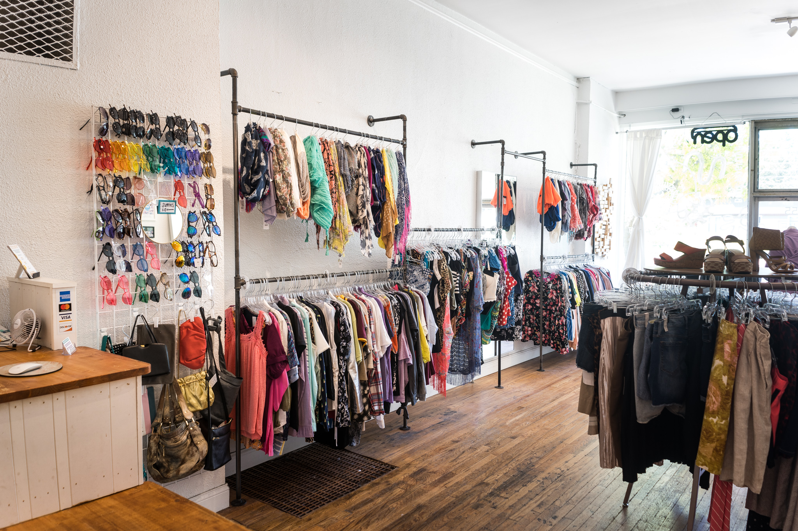

Since my family has our own business, this is the place that i had explored since young.
There are various night market,especially at Selangor that i had been visit and work.
The market area that i had often worked are at Puncak Alam, TTDI Jaya, Puchong, Kota Damansara and Putra Heigth.
Other than Selangor, i also had experienced running a business at Cameron Highland under FAMA organization.
By following my parent working, there are various benefits i had gained especially in term of skill such as communication, multi-tasking and time management.
